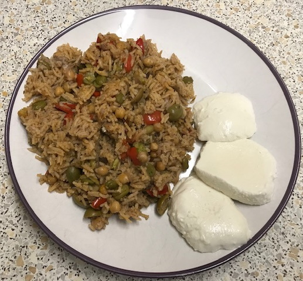

Baked spiced rice & chickpeas
- Heat in pan suitable for oven for 15 mins till onions soft
- 2 tbsp olive oil
- knob butter
- 2 large red onions
- 2 red peppers
- Add and cook for 3 mins
- 4 cloves chopped garlic
- 2 tsp cumin seeds
- 1 tsp allspice
- 1 tsp paprika
- Add and stir so spices coat rice
- 1 tin chickpeas
- 300g basmati rice
- 200g broad beans or peas
- Add 850ml chicken or vegetable stock, season and bring to simmer
- Bake at 190°C for 40 mins
- Top with
- 100g green olives (optional)
- juice ½ lemon
- Bake at 190°C for 10 mins
- Serve with following
- mozzarella or cooked salmon
- lemon juice and zest
- any combination of dill, mint, parsley
Notes

Recipe
link